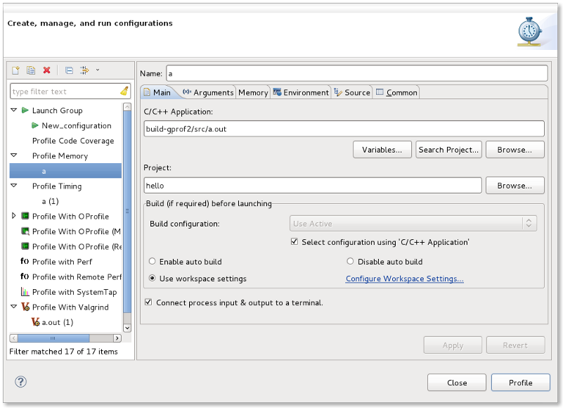
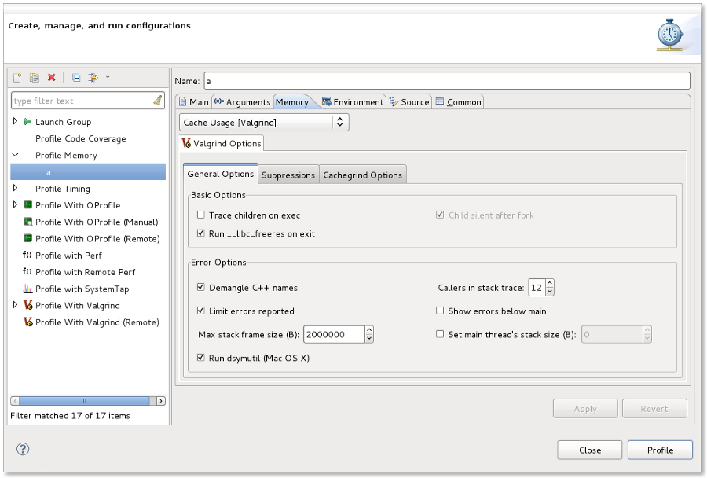
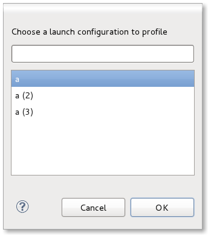

| Profiling Configurations | ||
|---|---|---|
|
|
|
|
| Profiling Categories | Updating This Document | |
As mentioned, each short-cut creates a menu item under the Profile as... context menu (e.g. right-click on a C/C++ executable). In addition to the short-cuts for each category, the end-user may select Profile Configurations...
This brings up a dialog that allows the user to modify current launch configurations or to create new ones:

The following tabs are provided in all Linux Tools profiling configurations:
With all short-cuts, a set of default parameters are set up for you such as: the executable will be the one you right-clicked on and the project will be set to its project automatically. If you wish to create a new configuration from scratch, simply select the type of profiling launch configuration you wish to create by clicking in the left-hand tree view and then push the icon found in the top left corner. This will create a new configuration with some defaults, but some options may require setting manually (e.g. the executable and the project).
In addition to the common tabs, each category contributes a tab for its own settings. For example, for Profile Memory, there is a Memory tab added:

The category tab will have the name of the category (i.e. in this case Memory) and will have a drop-down at the top which allows you to specify which tool to use. By default, it will have the current tool selected in the Profiling Category preferences page for the category or the initial default. You may override this for the configuration simply by opening the drop-down box and choosing another tool (if one is installed for that category).
Below that, note there is another set of tabs. These tabs are specific to setting options for the profiling tool chosen at the top. For details on what the options mean, see the appropriate User's Guide for the plug-in supplying the tool for profiling (e.g. in the Memory tab above, this would be the Valgrind tool's User's Guide).
When you choose a short-cut from the Profile as... context menu (e.g. Profile Memory),
a launch configuration will be created for you, if one does not currently exist for the C/C++ executable that is chosen. If there are multiple configurations that
point to the same executable (obviously with different configuration names), a dialog will be offered to you to select which profile you wish to use.

In the case where a launch configuration already exists for the C/C++ executable but it specifies a different default tool to use than the current one set in the Profiling Category preferences page, a new configuration will also be created. Thus, if you had a single launch configuration already, there will now be two configurations and this will trigger the multiple configuration selection dialog. Unique names for new configurations are created from old ones, adding a numeric value (e.g. (2) ). You are free to rename any configuration to make it easier for choosing via the Profiling Configurations dialog.
|
|

|
|
| Profiling Categories | Updating This Document |